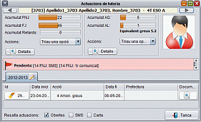
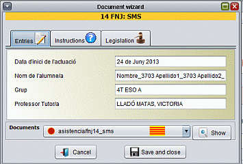

Mòdul de Fitxes-Tutoria
Actuacions de Tutoria
Les accions de tutoria consisteixen en mesures que estableix el ROF del
centre i fan referència a aspectes d'assistència,
puntualitat i disciplina. Aquestes accions van des de l'enviament d'un
SMS als pares fins a l'expulsió per expedient disciplinari. A
l'apartat següent s'expliquen les accions de tutoria en més
detall. Les actuacions poden estar obertes/iniciades i
tancades/finalitzades.
Per accedir a les actuacions de tutoria podeu fer clic sobre el
botó si teniu la fitxa de l'alumne oberta o directament des de
la pantalla principal clicant sobre la bandereta de color.
El significat de les banderes és el següent:
- Aquest alumne/a no requereix cap
tipus d'actuació.
- No hi ha actuacions pendents
però hi ha actuacions sense finalitzar.
- Hi ha actuacions pendents que cal
iniciar.
A la imatge de sota es mostra la pantalla d'actuacions. A la part
superior esquerre es mostra l'estat de faltes no justificades FNJ,
faltes justificades FJ i Retards acumulats des de principi de curs,
juntament amb una llista de possibles actuacions. A la part dreta es
mostra l'acumulat des de principis de curs d'amonestacions greus i
amonestacions lleus.

A la part central en color vermell, recorda les actuacions pendents que
s'han de dur a terme si el tutor ho considera oportú. Les
actuacions d'expedient disciplinari i expulsió només les
pot dur a terme l'usuari prefectura.
Si clicau directament sorbre la banda vermella, s'iniciarà
l'actuació de tutoria seleccionada.
Actuacions d’assistència
i puntualitat
Per iniciar una actuació d'assistència i puntualitat anam
a la llista i triam l'acció que volem dur a terme. Per exemple,
procedim a l'acció 14 FNJ: SMS. El programa demanarà
confirmació i direm “Sí”. Tot seguit ens
apareixerà una finestra semblant a aquesta:

El preparador de document permet modificar els valors que s'utilitzen
per generar el document. Hi ha alguns camps que poden estar protegits
contra escriptura. Així mateix, no es poden modificar els camps
d'accions d'expulsió que hagi duit a terme prefectura. Des
d'aquí podeu desar i veure el document que es genera. Per
això fer clic en el botó “mostra document”.
Segons el tipus d'actuació hi haurà més o menys
camps per omplir en el preparador del document. Una vegada haguem
acabat de veure el document que ens apareixerà el registre de
l'actuació a l'historial
Si feim clic sobre el camp
“id” es demanarà si volem esborrar
l'actuació. Si feim doble clic sobre “Data fi” ens
demanarà si la volem donar l'actuació per tancada.
Finalment, farem clic sobre “Document” si volem editar-lo o
veure-lo. Atenció: El
camp “Data fi” només és accessible per
prefectura per algun tipus d'actuació com ara SMS i expulsions.
Al camp “Prefectura” només hi podrà anotar
informació prefectura.
Actuacions de convivència
De manera semblant a l'anterior iniciariem una actuació de
convivència.